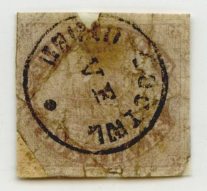
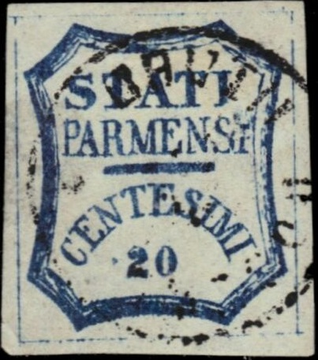
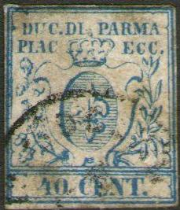
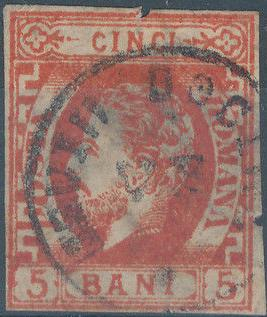
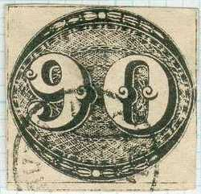
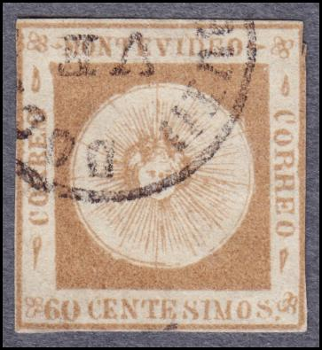
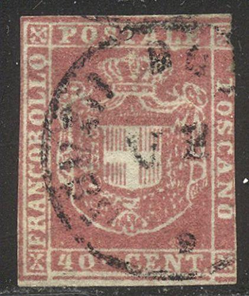
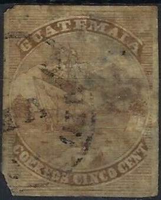

Return To Catalogue - 'CORREOS 7.1.60. II-III' forged cancels - 'Arregondo' forged cancel
Note: on my website many of the
pictures can not be seen! They are of course present in the
catalogue;
contact me if you want to purchase the catalogue.
A forged cancel consisting of a single circle "VF" in the center, a large dot at the bottom and an unreadable text in the outer part can be found on many forgeries of many different countries. It is not clear who applied this cancel. The article on http://www.bondskeuringsdienst.nl/VFstempel.pdf by Hans J.A.Vinkenborg attibutes it to the forger Spiro. The forgeries of Brazil with this cancel are generally attributed to the forger Zechmeyer. Could "VF" stand for "Venturini Florence"?



 


"VF" forgeries from Parma



Some examples from Rumania.




The left forgery of Honduras has the 'VF' cancel.



Uruguay forgeries with 'VF' cancel.

Cuba forgery with "VF" cancel.

Tuscany forgery with "VF" cancel.

Venezuela 1863 issue.

Venezuela 1865 issue.

Guatamala bogus issue.
{kind=link}
{kind=link}
{kind=link}
{kind=link}
{kind=link}
{kind=link}